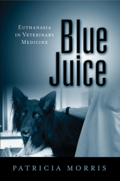

<body bgcolor="#FFFFFF" text="#000000" link="#0000FF" vlink="#CC0000" alink="#CC0000"><center><hr width="350" size="1" align="center" noshade>How veterinarians and pet owners manage companion animal euthanasia<hr width="350" size="1" align="center" noshade><p><a href="https://cdcshoppingcart.uchicago.edu/Cart/ChicagoBook.aspx?ISBN=9781439907054&&PRESS=temple" target="_top">Buy this book!</a> | <a href="https://cdcshoppingcart.uchicago.edu/Cart/Cart.aspx?PRESS=temple" target="_top">View Cart</a> | <a href="https://cdcshoppingcart.uchicago.edu/Cart/Cart.aspx?PRESS=temple" target="_top">Check Out</a></p><p></p></center><!--none//--><h1>Blue Juice</h1>
<H2>Euthanasia in Veterinary Medicine</H2>
<h3>Patricia Morris</h3>
<P>cloth 1-4399-0705-6 $90.50, Jun 12, <FONT COLOR=#990033>Available</FONT>
<br>paper 1-4399-0706-4 $32.95, Jun 12, <FONT COLOR=#990033>Available</FONT>
<br>Electronic Book 1-4399-0707-2 $32.95 <FONT COLOR=#990033>Available</FONT>
<BR> 244 pp
6x9
1&nbsp;table
</P><h3 align="center"><P><font color="#996633"> Midwest Sociological Society Distinguished Book Award,
2015</font></P>
</H3>
<BLOCKQUOTE><I>"Patricia Morris offers a richly textured and superbly insightful ethnographic account of the medical and ethical decisions and emotional responses of veterinarians with respect to the euthanasia of companion animals. Much is written about the lives of companion animals, but little is written about how those lives are ended. </I>Blue Juice<I> is essential reading for anyone interested in the complexities of human-animal relations."</I>
<br>&#151<b>Garry Marvin</b>, Professor of Human-Animal Studies, University of Roehampton, London <I></I></BLOCKQUOTE>
<P>Offering a candid behind-the-scenes look at small-animal veterinary practices, <i>Blue Juice</i> explores the emotional and ethical conflicts involved in providing a �good death� for companion animals. Patricia Morris presents a nuanced ethnographic account of how veterinarians manage patient care and client relations when their responsibility shifts from saving an animal's life to negotiating a decision to end it.
<P>Using not only her own experiences and observations in veterinary settings but also the voices of both seasoned and novice veterinarians, Morris reveals how practitioners think about euthanasia and why this �dirty work� can precipitate burnout, moral quandaries, and tense or emotional interactions with clients. Closely examining these interactions, Morris illuminates the ways in which euthanasia reflects deep and unresolved tension in human-animal relationships.
<P><i>Blue Juice</i> seeks to understand how practitioners, charged with the difficult task of balancing the interests of their animal patients and their human clients, deal with the responsibility of ending their patients� lives.
<BR>&nbsp;<h2>Excerpt</h2><P>Excerpt available at <a href="http://www.temple.edu/tempress">www.temple.edu/tempress</a></p>
<BR>&nbsp;<h2>Reviews</h2>
<p><i>"[T]his book [offers] detailed insight into the professional and private tensions experienced by practicing vets during the course of their work, but primarily when they perform euthanasia on animals. The author draws expertly from her rich data set, helping us learn a great deal about the nature of this complex occasion. [The book] helps us to understand the ethical and moral complexity of animal euthanasia, how vets undertake this work, and cope with the emotional consequences, for all involved. The rich and insightful nature of the account give[s] us confidence that the author has made significant in-roads into understanding this difficult and complex practice, from the point of view of those undertaking it."</i> <br>&#151<b><i>Symbolic Interaction </i></b>
<p><i>"This book may be found useful by clinical veterinarians and by their clients as well. Veterinarians may find some comfort in knowing that their concerns are shared by many other members of their profession and may learn of different alternative options to deal with these issues. Pet owners will similarly benefit by gaining a better appreciation of the complexity of these issues and of the perspective of the veterinarians. In the end, one can hope that this improved understanding of the issues related to companion animal euthanasia by all parties involved will result in a benefit to the animals, and that will be everybody�s gain."</i> <br>&#151<b><i>Animal Welfare</i></b>
<p><i>"Morris effectively describes the complexity, frustration, confusion, emotionality, and inconsistency encountered daily by veterinarians who must make decisions about ending the lives of their patients.... </i>Blue Juice<i> appears to be the most thorough and accurately depicted work surrounding euthanasia and the effect of euthanasia-related practice issues on veterinary practitioners.... Morris's work is an effective and eloquent description of the reality of the conundrum of euthanasia in veterinary medicine..... She addresses well the extreme efforts by veterinarians to provide compassionate and professional care for both patients and clients. Morris's observations are compelling, insightful, and artfully articulated. Her book should be required reading for every veterinary student, every veterinary educator, every veterinary curriculum committee, and all veterinary medical education accreditation organizations."</i> <br>&#151<b><i>Journal of Applied Animal Welfare Science</i></b>
<p><i>"Morris skillfully analyzes...aspects of veterinary euthanasia. In doing so, she sheds light on issues salient for the fields of work and occupations, the sociology of emotions, and, perhaps most significantly, death and dying. Moreover, the book enhances the research on dramaturgy and constitutes an important addition to the growing literature on human/animal relations.... </i>Blue Juice<i> brims with insights about the complexity, conflict, and satisfaction associated with not only protecting life but also dispensing death. One of the strengths of the book comes through Morris� analysis of how veterinarians navigate the dual role of healer of animals and provider of services to clients.... Another of the book�s strengths is its analysis of emotions..... </i>Blue Juice<i> is a thoroughly researched, clearly written, well-organized book. It offers a rich ethnographic analysis of euthanasia in veterinary medicine while reflecting on implications that extend far beyond that domain."</i> <br>&#151<b><i>Contemporary Sociology</i></b>
<p><i>"</i>Blue Juice<i> is a valuable and novel investigation of an act which is so commonplace to veterinarians that having someone from a completely different sphere evaluating what we do is a really useful piece of work. Thank you Dr. Morris."</i> <br>&#151<b><i>Anthrozoos</i></b>
<BR>&nbsp;<h2>Contents</h2><P>
<p>Acknowledgments
<br>Introduction: <i>Euthanasia in Veterinary Medicine</i>
<br>1. Negotiating Death: <i>Managing Disagreement with Pet Owners</i>
<br>2. Creating a Good Death: <i>The Dramaturgy of Veterinary Euthanasia</i>
<br>3. Strange Intimacy: <i>Managing Pet Owners� Emotions</i>
<br>4. Learning to Euthanize: <i>Death and the Novice Veterinarian</i>
<br>5. Coping with Euthanasia: <i>Emotion-Management Strategies</i>
<br>Conclusion: <i>Animals as Property and Patients</i>
<br>Appendix: <i>Methodology</i>
<br>Notes
<br>References
<br>Index
</P><BR>&nbsp;<H2>About the Author(s)</H2>
<P><b>Patricia Morris</b> is Assistant Professor of Sociology at Drury University.</P>
<BR><H2>Subject Categories</H2>
<p><A HREF="/tempress/animal_soc.html" TARGET="_top">Animals and Society</a>
<BR><A HREF="/tempress/sociology.html" TARGET="_top">Sociology</a>
<BR>
</p>
<BR><h2 class="inpageheading">In the series</H2>
<P><I><a href="http://www.temple.edu/tempress/animals.html" onMouseOver="window.status='Click for other books in this series!'; return true;" onMouseOut="window.status=''; return true;" target="_top">Animals, Culture, and Society</a></i>, edited by Arnold Arluke and Clinton R. Sanders.
</p><p><I>Animals, Culture, and Society</I>, edited by Arnold Arluke and Clinton R. Sanders, is concerned with probing the complex and contradictory human-animal relationship through the publication of accessible books that consider the place of animals in our culture, our literature, our society, and our homes.</p>
<p align="center"><a href="https://cdcshoppingcart.uchicago.edu/Cart/ChicagoBook.aspx?ISBN=9781439907054&&PRESS=temple" target="_top">Buy this book!</a> | <a href="https://cdcshoppingcart.uchicago.edu/Cart/Cart.aspx?PRESS=temple" target="_top">View Cart</a> | <a href="https://cdcshoppingcart.uchicago.edu/Cart/Cart.aspx?PRESS=temple" target="_top">Check Out</a></p><p><font face="Arial" size="1"><a href="copyright.html" onMouseOver="window.status='Web Copyright Policy';return true;" onMouseOut="window.status=''" title="Web Copyright Policy">&copy;</a> 2015 <a href="http://www.temple.edu" target="new" onMouseOver="window.status='Link to Temple University home page';return true;" onMouseOut="window.status=''" title="Link to Temple University home page">Temple University</a>. All Rights Reserved. http://www.temple.edu/tempress/titles/2158_reg.html</font></p>